导入资料
在 LemmaLoom 中，工作从把资料的内容导入项目开始。文件、网页和录音都作为文档导入，之后无论是哪一种，阅读、编码和分析的方式都相同。导入之前，LemmaLoom 会根据来源自动完成不同程度的处理。例如，纯文本文件按原样导入。导入 PDF 文档或网页时，LemmaLoom 会自动为你提取其中的文字。导入音频或视频时，LemmaLoom 会自动转录其中的语音。
导入资料的途径
| 资料 | 命令 | 项目保存的内容 |
|---|---|---|
| 纯文本文件 | 文件 ▸ 导入 ▸ 文档（⇧⌘I） | 文本 |
| PDF 文件 | 文件 ▸ 导入 ▸ 文档（⇧⌘I） | 各页的文本 |
| 网页 | 文件 ▸ 导入 ▸ 网页（⌥⇧⌘I） | 文章的文本 |
| 音频和视频文件 | 文件 ▸ 导入 ▸ 文档（⇧⌘I） | 转写文本，以及一份供播放的录音副本 |
| REFI-QDA 项目和编码本 | 文件 ▸ 导入 ▸ REFI-QDA 项目或 REFI-QDA 编码本 | 见第 22 章“交换与导出” |
| LemmaLoom 归档 | 文件 ▸ 导入 ▸ LemmaLoom 归档 | 见第 22 章“交换与导出” |
| 示例项目 | 文件 ▸ 导入 ▸ 示例项目 | 一个新项目“气候辩论”，已经建立索引 |
| 电子表格中的属性值 | 项目的属性窗口中的导入 | 项目中已有文档的属性值 |
只要条件允许，请使用 UTF-8 编码的纯文本。导入纯文本时，LemmaLoom 会完全保留输入的内容。不过，有些资料可能只有 PDF 版本，例如已出版的报告。导入 PDF 之后，请检查段落是否正确。网页文章只要无需登录即可访问，LemmaLoom 就能导入。如果网页文章需要登录才能阅读，请在浏览器中把它存储为 PDF，然后导入这个 PDF。如果你打算在阅读和编码时播放录音，请把它直接导入 LemmaLoom。如果不需要播放，也可以把打字录入的转写文本作为纯文本文件导入。
REFI-QDA 是 LemmaLoom 与其他质性数据分析软件之间交换数据所用的标准格式。交换项目和编码本时，请使用 REFI-QDA。
你也可以直接从访达导入文件。连按任意 .llz LemmaLoom 归档文件、.qdpx REFI-QDA 项目文件或 .qdc REFI-QDA 编码本文件即可。文件导入到哪里，取决于其内容。REFI-QDA 项目总是作为新项目添加，项目的归档文件也是如此。编码本以及文档集或文档的归档文件，会添加到当时在导航栏中选中的项目。导入之前，请确认选中的是正确的项目。
本指南中的大多数示例都来自“气候辩论”。你可以用文件 ▸ 导入 ▸ 示例项目导入这个项目。它导入后即可使用，已经全部建立索引，所用语言与界面语言一致。其中大多数文档以纯文本导入，包括评论文章、专栏、博客文章和一篇演讲。其余的是一份 PDF 报告、一篇来自网络的新闻报道和一段电台辩论录音。
每个文档都必须属于且只属于一个项目。在导航栏中选中项目之前，菜单中的文档和网页两项不可用。活动窗口也提供这两个命令，并带有显示项目名称的菜单。见本章后半部分的活动窗口。
LemmaLoom 可以根据项目中已有的文档生成译文。生成的每份译文都排在其原文下方。例如在“气候辩论”中，“时间不多了 (英语)”就列在“时间不多了”下方。见第 9 章“译文与分屏浏览”。从外部导入的译文视为普通文档。
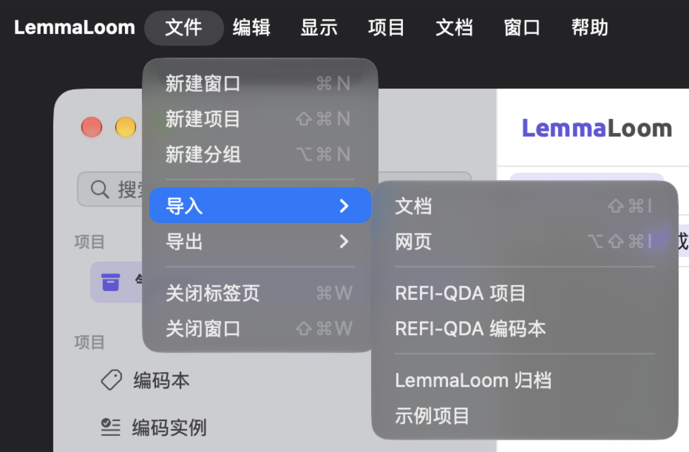
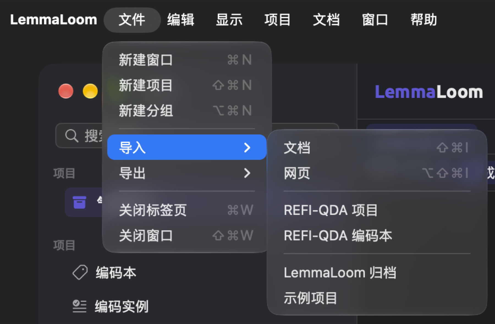
关键术语
- PDF 或网页的导入对话框顶部总有一个来源预览。在来源导入 LemmaLoom 之前，这个预览会显示它的相关信息。借助来源预览，你可以在导入之前发现问题，例如选错了文件，或者文字无法阅读。
- PDF 的文本层包含真正可读的文字，而不是文档页面的图像。许多扫描件没有这一层。
- 在 LemmaLoom 中，转写文本指 LemmaLoom 根据录音或其他媒体生成的文字。每份转写文本都由许多转写片段组成，每个片段通常是一个句子，对应媒体中的特定时间点。转写文本中的每一段都与它在媒体中的位置相关联，并带有说话人、开始时间和结束时间等信息。
- LemmaLoom 对文档所做的语法分析称为索引。建立索引时，LemmaLoom 把文本切分成句子和词符（词和标点符号），确定这些词符之间的依存关系以及它们如何组合成短语，并为每个词符加上词性标记。新文档导入后会在后台建立索引，除非你在导入时取消勾选为语法分析建立索引。见本章后文的导入之后。
- 分析器在索引建立完成后查找特定的语言特征，并标注找到的文字。元话语和修辞就是两个例子。
导入文档
文本文件、PDF 和录音都用同一个命令导入 LemmaLoom。一次选择的文件中可以混合这三种类型。在示例项目“气候辩论”中，“电台辩论”来自一个音频文件，“2024 热浪报告”来自一个 PDF 文件，十一篇评论类文本则来自纯文本文件。
导入文档的步骤如下：
- 在导航栏中选择项目。
- 选取文件 ▸ 导入 ▸ 文档（⇧⌘I）。
- 选择文件，然后点按打开。
- 导入文档对话框会为第一个文件打开。检查名称，并填写你所了解的文档信息（见下文的“导入文档”对话框）。
- 点按导入。如果你选择了多个文件，对话框会为下一个文件再次打开。
导入多个文档时，对话框右上角会显示一个计数，表示当前文件在全部待导入文件中的位置，例如2 / 6。跳过会略过当前文档，载入队列中的下一个；取消会放弃当前文档及其后的所有文档，然后关闭对话框。这一批中已经导入的文档照常保留在项目中。
导入在后台进行，你可以照常工作。文本文档几乎立刻出现在导航栏中；其他文档在完成之前，会在文档部分的末尾显示一个进度行。导入过程中会显示一个进度环；如果没有完成百分比（例如处理录音的某些阶段），进度图标就变成旋转指示器。将鼠标指针悬停在进度行上，可以看到导入的当前阶段，例如正在读取 PDF或正在转录语音。如果有百分比，也会一并显示。
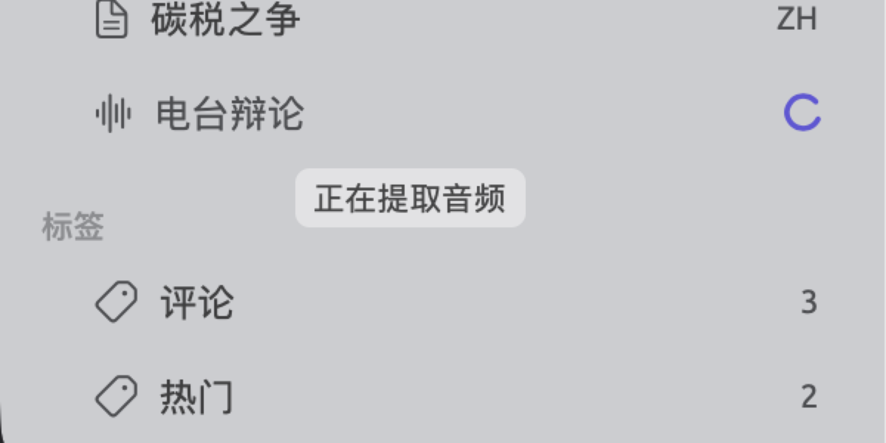
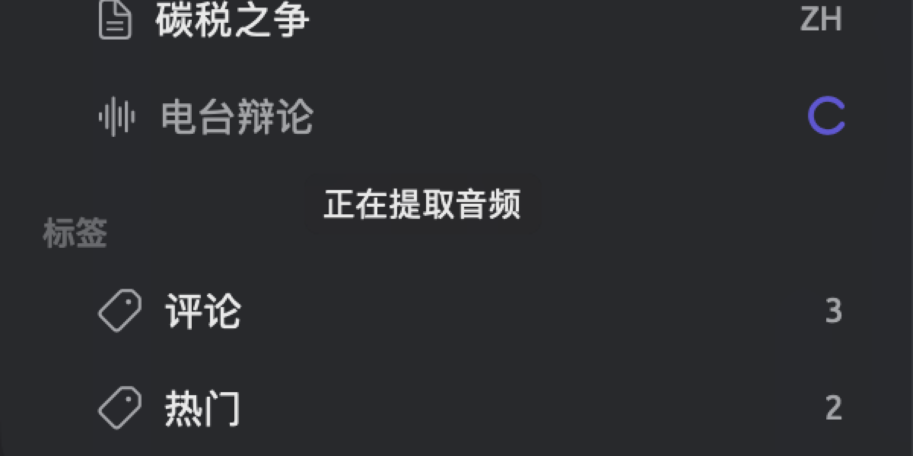
导入按你点按导入的先后顺序逐个进行，因此在一段长录音之后确认的文本文档，要等这段录音转录完毕才会导入。如果有打算在 LemmaLoom 中马上处理的文本文档，请先导入它们，再导入录音。
退出 LemmaLoom 会终止正在进行的导入，以及排在它后面的所有导入。之前已经导入的文档照常保留在项目中，但等待导入的文件之后需要重新导入。关闭 LemmaLoom 的最后一个窗口也算作退出。导入一旦开始，就让它全部完成，不要中断。
导入遇到错误时会提前终止。这时会弹出标题为出了点问题的对话框，说明导入失败的原因。LemmaLoom 会把这些错误消息暂存起来，等当前这一批中剩余的对话框全部完成后再一并显示。
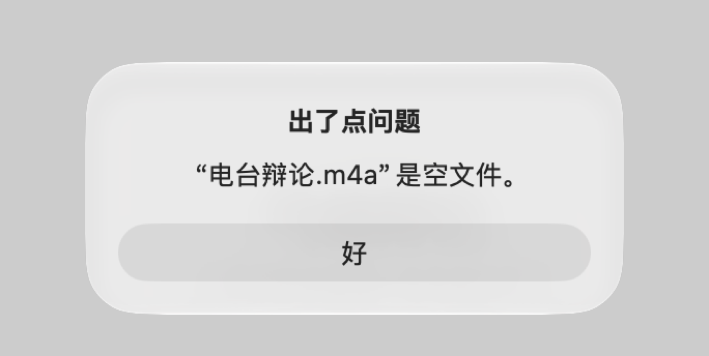
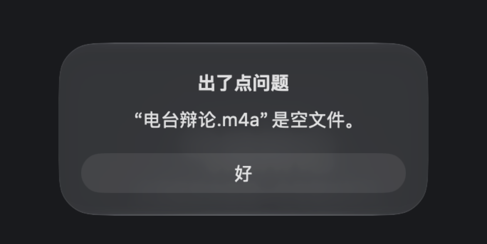
“导入文档”对话框
除网页以外，所有文档都通过导入文档对话框导入；网页则通过从网页导入对话框导入。PDF 和网页文档的对话框顶部还会多出一个来源预览。大多数信息之后都可以在文档信息中修改；要把文档移到另一个分组，请右键点按导航栏中的文档，然后选取移到分组。对哪一项没有把握，就先跳过。
例如，示例项目“气候辩论”中的十一篇评论类文本，在项目定义的四个属性上都有值。每个文档都有发表日期，并且属于“纸媒”或“网络”分组。下图中，“来自气候罢课的信”是一起导入的六个文档中的第一个，它的“立场”和“读者数”已经填好。
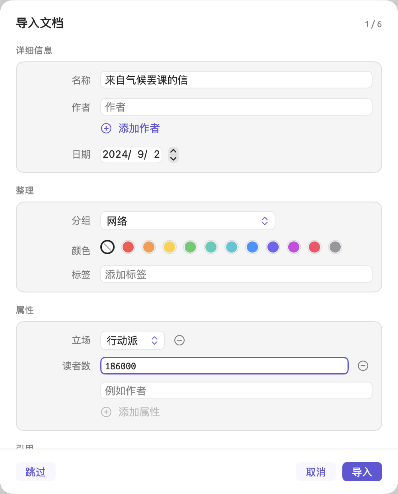
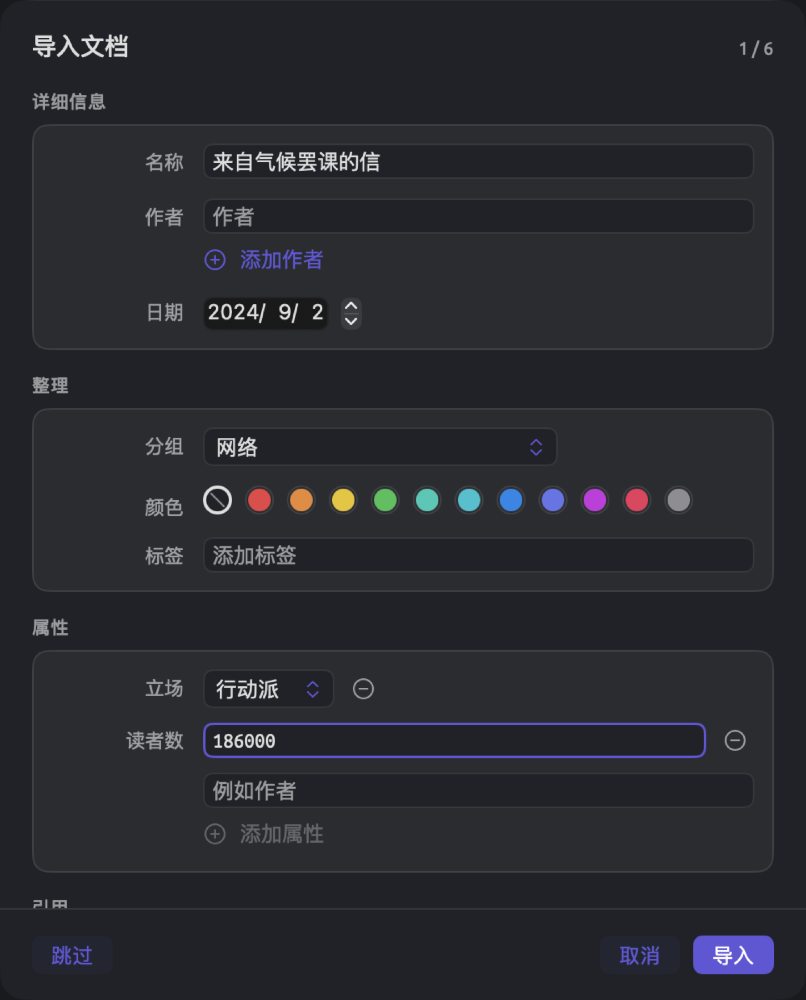
详细信息
名称取自去掉扩展名的文件名，时间不多了.txt 会变成“时间不多了”。名称显示在导航栏、标签页和每个结果表格中。名称栏为空时，导入按钮不可用。作者中每位作者占一项。要添加更多作者，请点按添加作者。
每个文档都有日期，查询和智能文档集都可以使用它。对于 PDF 和网页，LemmaLoom 会尽可能自动确定日期。对于文本文件和媒体文件，日期最初是当天的日期。“发表日期”这类日期属性与日期相互独立。例如，当文档需要第二个日期时，你可以手动填写“发表日期”。
整理
分组把文档放入项目中的某个分组，例如“纸媒”。未分组把文档留在文档部分的顶层。颜色改变文档图标在导航栏中的颜色。
标签中可以添加任意多个标签。输入标签后按 Return 键（或输入英文逗号）。开始输入时，LemmaLoom 会从你以前用过的标签中给出建议；所有项目共用同一套标签词汇。见第 8 章“文档集、分组、标签和属性”。
属性
文档的属性值在这里填写。属性是描述整个文档特征的变量，例如评论文章的“立场”和“读者数”。
- 在这一部分底部的输入栏中输入属性名称。输入时，LemmaLoom 会列出本项目和你其他项目中的属性名称作为建议，每条建议都标出其类型。
- 如果项目中已有这个名称的属性，点按添加属性。随即出现该属性的一行，请在其中输入或选择值。
- 如果是新名称，请从文本、整数（不带小数的数）、小数、布尔值（是或否）、日期和选择器（从固定的选项列表中选一项）中选择一种类型。对于选择器，还要输入各个选项，每行一个。点按添加属性，然后在新出现的行中输入值。导入时，LemmaLoom 会为整个项目创建这个属性。
选用来自其他项目的建议名称时，它的类型和选项也会一并带过来。要删除某一行，请点按行末的移除按钮。
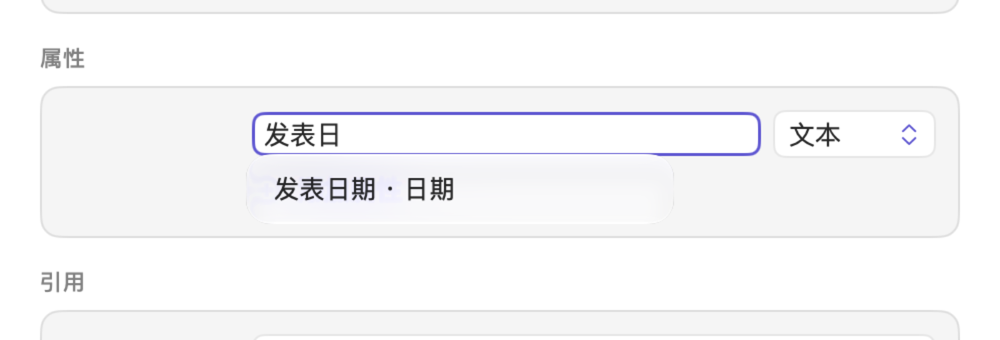
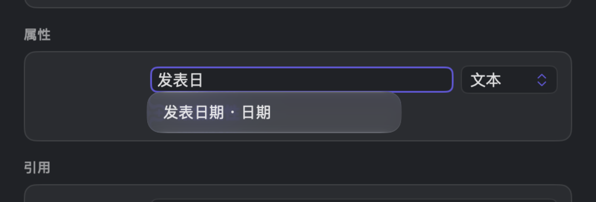
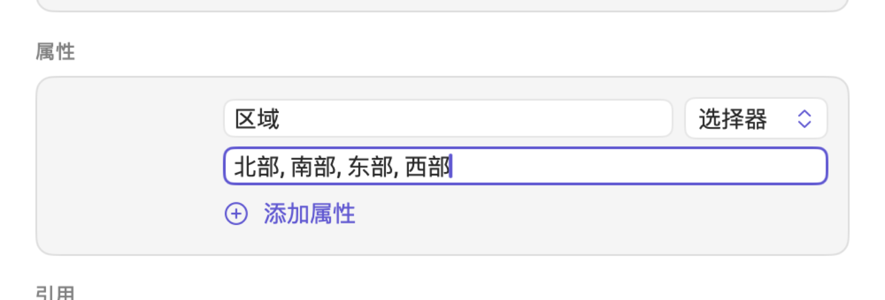
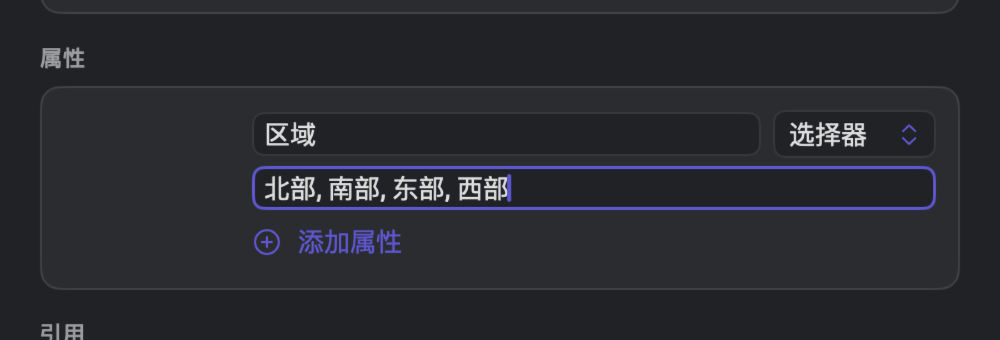
批量导入时，每个文件的对话框都会恢复初始状态。分组、颜色、标签、属性值、语言、分析器和排除模式都会重置。要一次为多个文档填写属性值，可以在导入之后导入一个电子表格，见本章后文的从电子表格导入属性值。
引用
如果来源已经发表，请在出版方、出版物、URL 和 DOI 栏中填写书目信息。出版物保存刊载该来源的载体名称，例如期刊或网站。对于 PDF 和网页，LemmaLoom 可能会自动填写其中一些栏目。
索引
最后一部分包含语言、为语法分析建立索引、分析器和从索引中排除。见选择语言、分析器与建立索引和从索引中排除文本。
选择语言
语言决定文档进行哪一种语法分析。你可以选择英语、德语或中文，也可以把语言保留为自动。选择自动时，LemmaLoom 根据文档开头的 4,096 个字符（相当于几百个英文单词）识别语言；对于录音，则根据转录结果来判断。见本章后文的转录的工作方式。如果选择英语、德语或中文而不是自动，LemmaLoom 就完全跳过识别这一步。
例如，在自动设置下，一份以长篇英文摘要开头的德语文档，可能会被整篇当作英语来建立索引。如果文档开头的语言与其余部分不同，请手动指定语言。
使用英语、德语和中文以外语言的文档可以导入，但不会建立索引。阅读器的状态栏会显示这一状态，例如不支持法语的语法分析。这样的文档仍然可以查看和编码。如果语言识别错了，请在文档信息中设置正确的语言，LemmaLoom 随后会重新为该文档建立索引。
导航栏在每个文档旁边用两个字母的代码显示其语言，例如 EN 表示英语，DE 表示德语。将鼠标指针悬停在代码上，可以看到文档所用语言的全称。
分析器与建立索引
为语法分析建立索引默认处于勾选状态。如果你想阅读和编码文档，但暂时不需要语法分析，可以取消勾选，等需要语法分析时再建立索引。以这种方式添加的文档，阅读器的状态栏会显示索引已关闭。要为它建立索引，请点按状态栏中的立即建立索引，或者该文档文档信息对话框中的同名按钮。
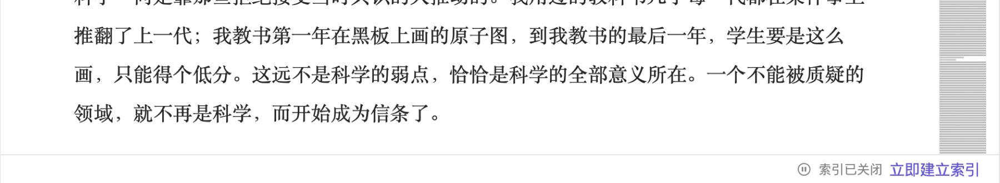
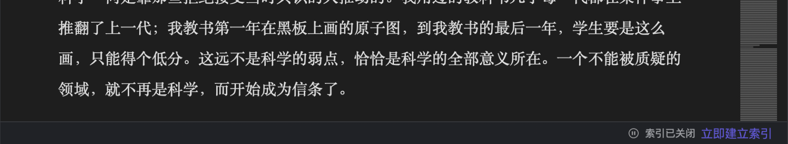
分析器列出文档索引建立完成后要运行的分析器。衔接通过代词、词语重复等纽带，把每个句子与前面的句子联系起来。元话语标注口语和书面语中用来评说话语本身的词语，例如模糊限制语、增强语和连接词。修辞分析被动语态和其他修辞手段。第 6 章“透镜”和第 11 章“语法检查器”以可视化方式呈现这些分析器的结果。在窗口 ▸ 分析器中编写的自定义分析器紧随其后列在列表中。见第 20 章“自定义分析器”。
默认情况下，语言设为自动，LemmaLoom 列出所有可用的分析器。选定某种语言后，列表只保留能处理该语言的分析器。每个分析器一开始都处于选中状态，会在该文档上运行。取消选择某个分析器，这个文档就会跳过它；之后仍可以在文档信息中运行。取消勾选为语法分析建立索引后，列表中的所有项都不可用。
从索引中排除文本
打字录入的转写文本常常包含录音中并没有说出的额外文字。这些文字形式多样，例如方括号中的时间戳 [00:12:31]，又如每个话轮开头的说话人名称 主持人： 和 怀疑论者：。保留这些名称会增加词的数量。假设“电台辩论”的打字转写文本在每个话轮前都加上 主持人：、活动人士： 或 怀疑论者：，那么这份转写文本中最常见的名词就会是这些名称中的词，例如活动和人士。这会扭曲关键词列表和词汇速写。LemmaLoom 根据录音自行生成转写文本时，会把说话人保存在编码和转写片段中。见本章后文的说话人。
要让时间戳和说话人名称不进入语法分析，请使用从索引中排除。被排除的文字仍保留在文档中，可以阅读和编码，但不参与建立索引，因此也不进入语法分析。
要排除的内容需要用正则表达式来定义。正则表达式是一种模式，能匹配一整类文本字符串。如果你从未写过正则表达式，可以从下面这些基本写法入手。
| 写法 | 匹配 |
|---|---|
\d | 任意一个数字 |
某个成分后面的 + | 该成分连续出现一次或多次 |
\[ 和 \] | 左方括号和右方括号（反斜杠让它们按字面匹配） |
\. | 句点（单独的 . 匹配任意字符） |
\S | 任意一个不是空格的字符 |
某个成分后面的 ? | 该成分出现一次或不出现 |
逐个成分来看，\[\d+:\d+:\d+\] 以一个左方括号开头，接着是三组由冒号隔开的数字，每组有一个或多个数字，最后是一个右方括号。它能匹配 [00:12:31] 或 [1:05:09] 这样的文本，但不能匹配只有一个冒号的 [12:31]。
在圆括号中，竖线分隔几种可选的写法。(主持人|活动人士|怀疑论者)： 表示 主持人：、活动人士： 和 怀疑论者：。注意，模式区分大小写字母，因此模式 Host: 不会匹配 host:。如果要忽略大小写，请在模式前面加上 (?i)。单独使用时，脱字符 ^ 表示整个字符串的开头。模式 (?m)^(主持人|活动人士|怀疑论者)： 只在 主持人：、活动人士： 和 怀疑论者： 位于行首时才匹配它们。
添加模式的步骤如下：
- 在从索引中排除下方的输入栏中输入模式。输入栏下方的一行会显示一段它能匹配的示例文本；没有示例可显示时显示有效模式；模式无效时显示无效模式。
- 点按添加，或按 Return 键。
添加旁边有一个预设菜单，其中提供现成的模式：
| 预设 | 模式 |
|---|---|
| 时间戳 [hh:mm:ss] | \[\d+:\d+:\d+\] |
| 时间戳 [mm:ss] | \[\d+:\d+\] |
| 说话人名称 | 说话人 ?\d+[:：] |
| 网址 | https?://[^\s\p{Han}\u3000-\u303F\uFF00-\uFFEF]+ |
| 电子邮件地址 | [^\s\p{Han}\u3000-\u303F\uFF00-\uFFEF]+@[^\s\p{Han}\u3000-\u303F\uFF00-\uFFEF]+\.[^\s\p{Han}\u3000-\u303F\uFF00-\uFFEF]+ |


你可以把经常遇到的模式创建为自己的预设。打开设置的通用面板，在排除预设区域中点按添加预设，为新预设命名，然后输入它的模式。在预设菜单中，你的预设排在 LemmaLoom 的默认预设之后。
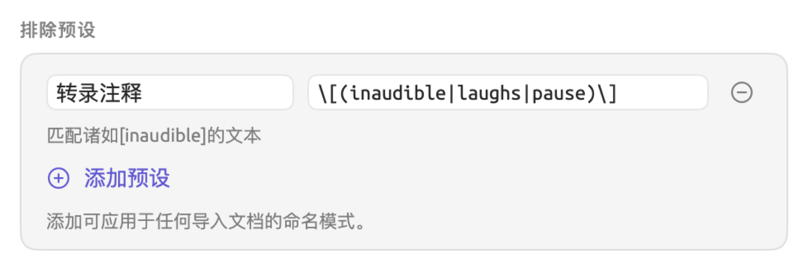
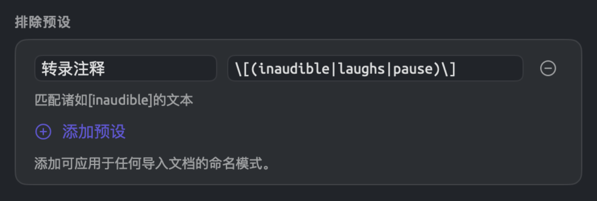
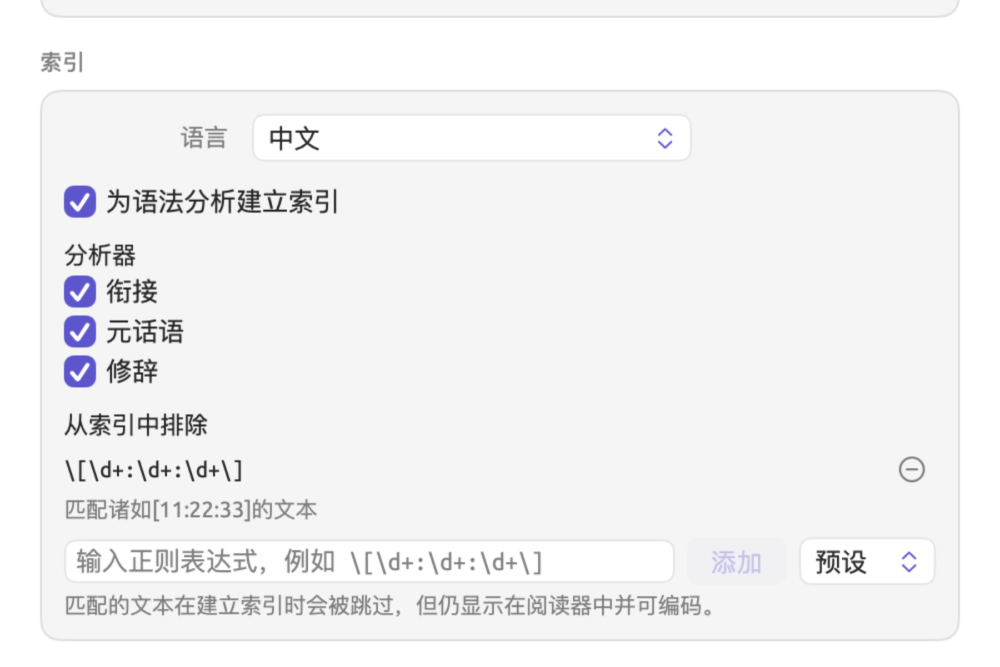
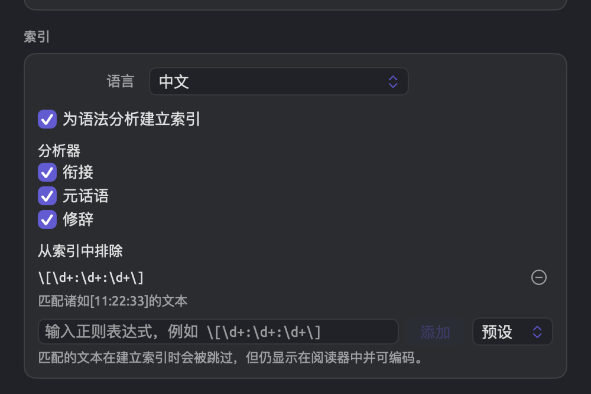
这些模式随文档本身保存，之后可以在文档信息对话框中修改。修改之后，LemmaLoom 会重新为该文档建立索引。
文本文件
扩展名为 .txt 等的文本文件都按原样导入。Markdown（.md）等其他纯文本文件也以同样的方式导入，其中的 # 和 * 等特殊字符都会保留。
LemmaLoom 按 UTF-8 读取文本文件。使用比 UTF-8 更早的编码（例如 Windows Latin 1）保存的文本文件，其中带重音的字母或汉字可能会显示为 �。要解决这个问题，请在文本编辑器中把文件重新存储为 UTF-8 编码，然后再导入一次。
保存为 .docx 或 .doc 的文档，必须先从 Word 中导出才能导入。可以导出为 UTF-8 纯文本或 PDF；条件允许时请选择纯文本，因为它能完整保留段落。PDF 只保存页面上每一行文字的信息，因此 LemmaLoom 需要根据导入的数据重建原来的段落。见本章后文的文本的提取方式。
RTF 和 HTML 文件本身也是文本文件，因此同样可以在文件对话框中选择。它们导入后会保留全部格式代码。请务必先把 RTF 文档导出为纯文本，再导入 LemmaLoom。网页可以用文件 ▸ 导入 ▸ 网页导入。
文本文件中的段落由 LemmaLoom 来划分。段落的位置会影响阅读器中的段落编号，也会影响以段落为单位的查询。LemmaLoom 首先看文件中有没有空行。只要有一个空行，就只以空行分隔段落；在有空行的文档中，单个换行属于段落内部。如果完全没有空行，每一行就是一个段落，因此每个话轮占一行的打字转写文本，导入后每个话轮就是一个段落。
PDF 文档
PDF 的内容可以是真正的文本，也可以是扫描的页面图像，或者两者兼有。文件中的文本层会被直接读取，没有文本层的页面则进行文字识别。随后项目只保存文本。
PDF 来源预览
导入 PDF 时，LemmaLoom 会先检查文档，然后才允许你导入。在这一阶段，来源预览显示正在读取 PDF，导入不可用。检查完成后，预览会显示文件名、总页数以及文本层中的词数。对于“2024 热浪报告”，预览显示6 页 · 493 个词。没有可用文本层的页面单独计数（例如2 页需要文字识别）。下方显示文本的开头几行。
请查看开头几行，确认选中的是正确的文件，并且开头几行中有可读的文字。词数只根据有文本层的页面计算，因此“2024 热浪报告”的词数不包括需要文字识别的那两页。不过，导入过程本身会识别这些页面上的文字，并把它们收入文档。
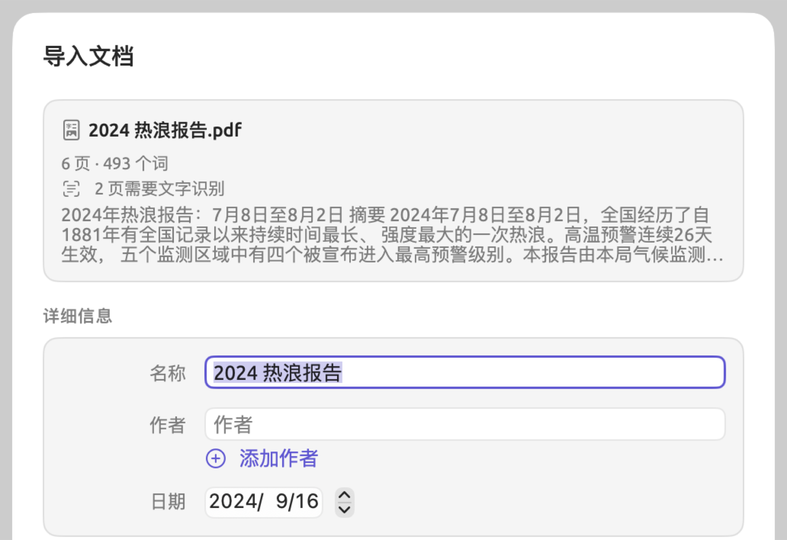
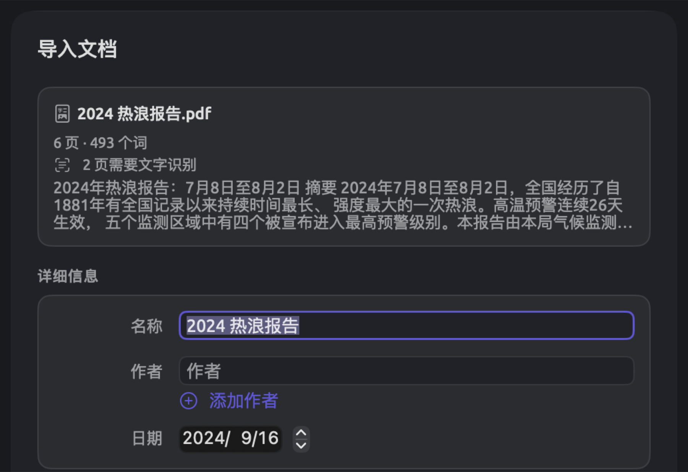
LemmaLoom 会从 PDF 中提取信息来填写对话框。名称取 PDF 的标题字段，除非它只是一个占位标题，或者你已经改过名称。占位标题包括“Untitled”、任何扩展名为 .docx 的文件名，以及任何以“Microsoft Word -”开头的标题。作者取 PDF 作者字段中的作者姓名，多个姓名在分号处拆分。日期取 PDF 中的创建日期。DOI 取在 PDF 的主题字段中，或在 PDF 前两个有文字的页面上找到的第一个数字对象标识符（DOI）。
文本的提取方式
点按导入后，LemmaLoom 会逐页处理 PDF，导航栏中的对应行和活动窗口会显示正在读取 PDF以及百分比。
处理每一页之前，LemmaLoom 会先检测该页的文本层。通过检测的条件是：该页至少有 20 个字母或汉字，并且平均每 3 个字母或汉字中，不可读字符少于 1 个。不可读字符是指复制出来显示为方框或 � 的字符。通过检测的页面，其文字逐行提取；其他页面都按扫描页处理。扫描页会被渲染成图像，再进行文字识别；扫描质量不高或包含许多表格时，识别常常出错。请将结果与原件对照。
PDF 只记录行。LemmaLoom 根据行的结构重建段落。上下间距较大的两行之间，会开始一个新段落。缩进的首行会开始新段落，以句末标点结束的短行之后也会开始新段落。如果下一行以小写字母开头，上一行行尾的连字符就会被去掉，因此“infra-”和“structure”会变成“infrastructure”。同样，恰好在自身连字符处断开的复合词也会丢掉连字符，“long-”和“term”会变成“longterm”。请留意这类情况。如果下一页以小写字母开头，而上一页结尾没有句末标点，段落还会延续到下一页。在中文文本中，连接起来的各行之间不加空格。
LemmaLoom 会识别并删除页码和页眉页脚。页眉页脚是指在整个文档中反复出现在每页顶部或底部的标题。页面顶部或底部的短段落都可能是页眉页脚；如果相同的文字出现在至少 40% 的页面上，就算作页眉页脚。比较时不考虑数字和大小写，因此“2024 热浪报告，第 3 页”和“2024 热浪报告，第 4 页”算作相同的文字。“2024 热浪报告”共有六页，相同的文字至少要在 6 页中的 3 页上出现，才算作页眉页脚：LemmaLoom 算出 6 的 40% 是 2.4，向上取整为 3 页。单独出现的页码（“12”“iv”“Page 12”“Seite 12”“第 12 页”）在每一页的顶部和底部都会被删除。
文字按 PDF 中确定的顺序排列，因此在多栏页面和表格中，各行的先后顺序可能出错。脚注和图注也可能这样打乱文字的顺序。请检查结果中阅读顺序不一致的地方，必要时加以修正。具体方法见第 5 章“阅读与编辑”。
网页
导入的文档只包含网页上的文章，不包括文章周围的导航元素、广告或评论。
导入网页
“碳税之争”是“气候辩论”中的一篇新闻报道，从网上导入。它的网址保存在 URL 中。
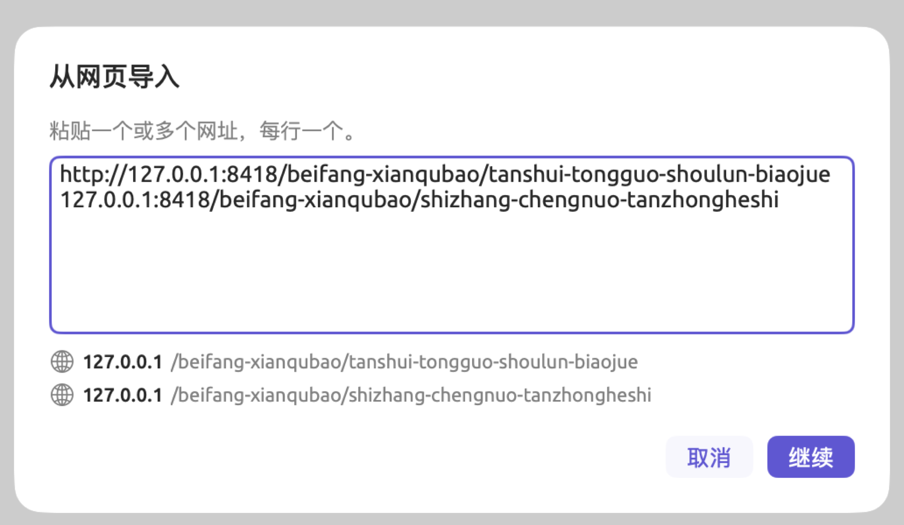
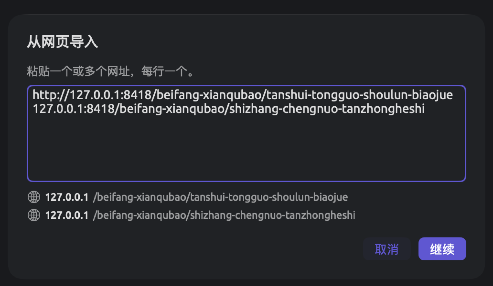
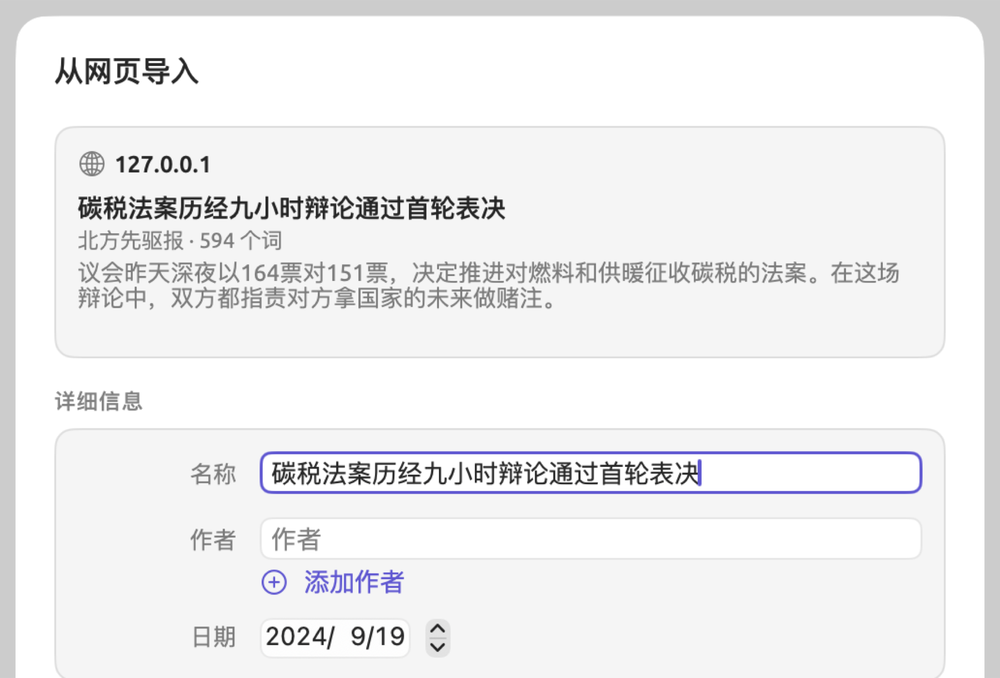
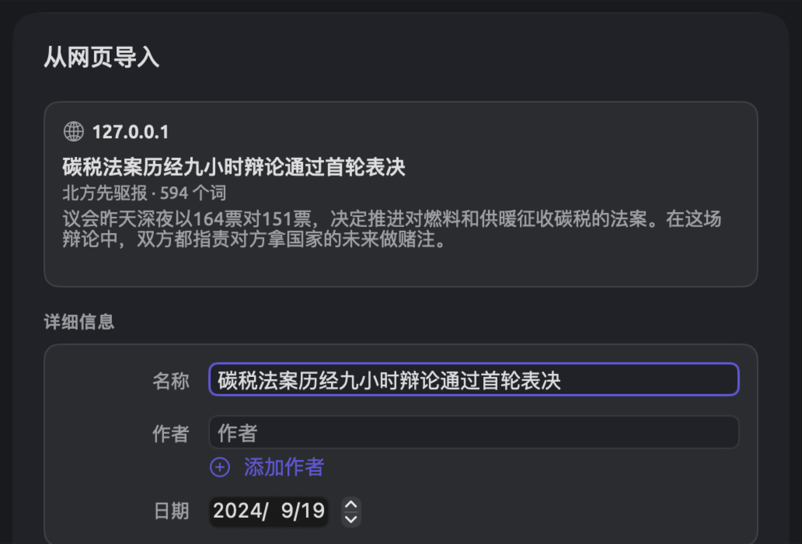
导入网页的步骤如下：
- 在导航栏中选择项目。
- 选取文件 ▸ 导入 ▸ 网页（⌥⇧⌘I）。
- 在从网页导入对话框中粘贴一个或多个网址，每行一个。LemmaLoom 会在输入栏下方列出它识别出的网址。缺少
https://的网址会自动补上，重复的网址只列出一次。 - 点按继续。
- 第二个从网页导入对话框会为第一个网址打开。LemmaLoom 加载网页并提取文章时，来源预览先显示正在获取网页，然后显示正在读取文章。
- 预览显示出文章后，检查标题和网站，也检查词数和开头几行。然后填写对话框的其余部分。
- 点按导入。如果输入了多个网址，对话框会为下一个网址再次打开。与导入文件时一样，对话框中有跳过和计数。
LemmaLoom 如何读取网页
LemmaLoom 导入网页时，会在一个无痕浏览会话中加载网页。LemmaLoom 会滚动到页面末尾一次并稍等片刻，以便取得滚动时才加载的文字，然后提取文章。
在文章文档中，文字按阅读顺序排列。图像、视频、网页表单和嵌入内容都会被去掉。每个标题、段落、列表项和表格单元格都成为文档中的一个段落。如果第一段只是重复标题，就会被删除。
来源预览显示词数和网站名称等元数据，还显示文章标题，以及网页本身提供的文章简介。如果网页本身没有简介，则显示正文的开头。
导入对话框只用网页中的可用数据填写空着的栏目。名称填入文章标题，作者填入网页上列出的作者。出版物填入网站名称，URL 填入网页链接（或者网页自己指定的首选地址）。日期是例外；只要网页明确写出了发表日期，就会使用这个日期，不管你之前填了什么。
音频和视频
LemmaLoom 接受 macOS 能够解码的任何格式的录音文件。音频格式包括 MP3、M4A、WAV 和 AIFF；视频格式包括 MP4 和 MOV。LemmaLoom 会转录录音中的语音，并自动分配相应的说话人编码。此外，它还会保存一份文件副本，让你在阅读转写文本时随时播放。
如果想让已有的转写文本与它的录音关联，可以把两者作为一个 REFI-QDA 项目的一部分一起导入。详细信息见第 22 章“交换与导出”中的导入 REFI-QDA 项目。单独导入的转写文本只是一个文本文件，不能播放。
导入录音
“气候辩论”中的“电台辩论”是一个导入的音频文件，其中有三位说话人：一位主持人、一位活动人士和一位怀疑论者。它的转写文本与录音关联，所以你在阅读时可以播放任意一段。说话人以编码的形式保存。
导入音频或视频文件的步骤如下：
- 在导航栏中选择项目。
- 选取文件 ▸ 导入 ▸ 文档（⇧⌘I）。
- 选择录音，然后点按打开。
- 在导入文档对话框中检查名称，并填写详细信息。把语言保留为自动。
- 点按导入。
文档部分的末尾会出现代表这段录音的一行；音频文件显示波形图标，视频文件显示胶片图标。将鼠标指针悬停在这一行上，会出现一个提示，显示当前正在进行的步骤。你也可以查看活动窗口。
| 步骤 | 具体内容 |
|---|---|
| 正在准备 | LemmaLoom 把文件复制到资料库中，并读取其时长。 |
| 正在提取音频 | 读取音轨，为转录做准备。 |
| 正在下载语音模型 | Apple 语音识别第一次转录某种语言时，会下载该语言的语音模型。百分比显示进度。 |
| 正在转录语音 | 把语音写成文字。百分比显示进度。 |
| 正在识别说话人 | 区分不同的声音，并把每个句子分配给一位说话人。 |
所有步骤全部完成后，新生成的文档会取代这一行，随后开始建立索引。转录所需的时间因电脑而异；在导入大量文件之前，先导入一个文件，大致估计一下所需时间。
录音文件必须有音轨；没有音轨的文件无法导入，并会显示消息该文件没有可转录的音轨。空文件会给出一条写明文件名的消息，例如“电台辩论.m4a”是空文件。
转录的工作方式
LemmaLoom 可以转录英语、德语和中文语音。转录模型根据录音的前 30 秒判断录音所用的语言，然后用这一种语言转录全部内容。
中文转写文本使用简体字。
可用的模型有三种。要更改当前的转录模型，请在设置的通用面板中，从转录下的模型中选择。默认模型是 Apple 语音识别，速度也最快。与 Whisper Large v3 相比，Whisper Large v3 Turbo 稍快一些，但在较难处理的文件上可能稍欠准确。无论选择了哪个模型（包括Apple 语音识别），中文录音都只用 Whisper 转录。更改模型只影响之后的转录。
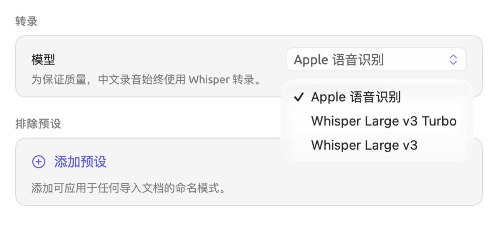
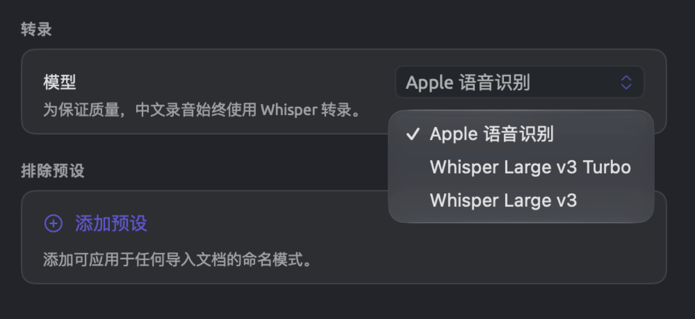
人名、术语、方言、多人同时说话和背景噪音，最容易让语音识别出错。开始编码之前，请边听录音边检查转写文本，并改正其中的错误。见第 5 章“阅读与编辑”。编辑时，编码实例、转写片段和其他标注会随着你的修改一起移动。
说话人
音频或视频文件的转写文本生成之后，LemmaLoom 会分辨其中的声音，并根据每个句子由谁说出来进行编码。一旦检测到第二个、第三个（或更多）声音，各个句子就会分配给相应的声音，这些说话人按在对话中开口的先后，标为“说话人 1”“说话人 2”，依此类推。
LemmaLoom 会自动创建一个名为“说话人”的编码，每个声音对应一个子编码，应用于该声音的话轮。话轮是指同一个人连续说出的一串句子。每个子编码有自己的颜色，并应用于该说话人的每一个话轮。这些编码只属于这一个文档。见第 7 章“编码”。
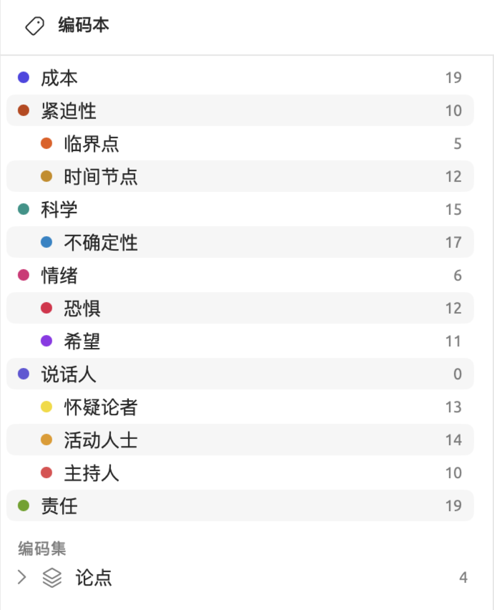
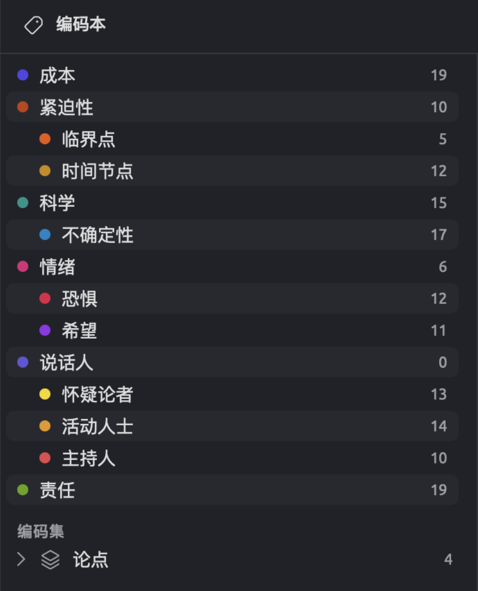
下面再以“电台辩论”为例。在这段录音中，主持人先说话，然后是活动人士，最后是怀疑论者。如果你导入的文件中依次是主持人、活动人士和怀疑论者，那么“说话人 1”编码指主持人，“说话人 2”编码指活动人士，“说话人 3”编码指怀疑论者。之后，你可以在编码本中把这三个编码分别重命名为“主持人”“活动人士”和“怀疑论者”。在示例项目中，“电台辩论”的编码和转写片段已经带有说话人名称。
说话人识别只能依据声音本身。听起来相似的声音和简短的插话可能会让识别出错，多人声音重叠和背景声音也会干扰识别。有时，识别会把同一个声音分成两位不同的说话人。请对照录音检查说话人编码。分给了错误说话人的段落，请重新编码。如果一个声音被分成了两位说话人，请把这两个说话人编码合并。如果总共只检测到一个声音，就不会添加任何说话人或说话人编码。
转写片段
转写文本由片段组成，通常每个句子一个片段。每个片段都包含开始时间和结束时间；识别出不止一个声音时，还包含说话人。转写文本就是按这些片段排列的。相邻的两个句子属于同一位说话人时，它们会放在同一个段落中。但如果换了说话人，或者停顿超过 1.5 秒，就会开始一个新段落。
片段把文本和录音联系起来。播放器根据片段得知当前播放的是转写文本的哪一部分，你也可以借助片段直接跳到转写文本的任意位置。查询可以通过话轮单位使用片段。见第 15 章“构建查询”。话轮单位为每个片段提供一项，因此一个包含五个句子的话轮会得到五项。每一项都有说话人、开始、结束和时长字段。
播放录音
打开录音文档时，文本正上方会出现播放栏，见第 5 章“阅读与编辑”。播放栏包含播放录音的控制按钮、时间位置，以及当前所听段落的说话人信息。对于已经建立索引的文档，点按一个词，播放器就会跳到这个词所在片段的开头。文档正在建立索引时（编辑文档之后也会重新建立索引），只能用滑块在录音中移动。
播放按钮右侧的随音频滚动按钮让阅读器随播放滚动。在文档中播放录音时，阅读器会显示正在播放的段落，并使它保持在视野中。这个按钮一开始处于关闭状态；打开之后，它对所有录音都保持打开，直到你手动关闭。随音频滚动的段落可以显示为聚光（默认）、实心块或高亮。请在设置的阅读器面板中，于音频播放下选择这些段落的显示方式。
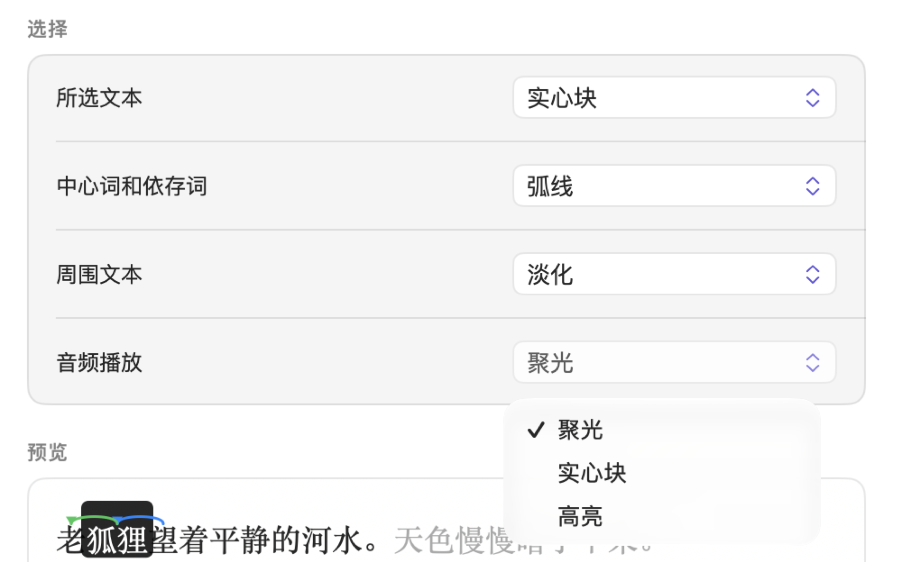
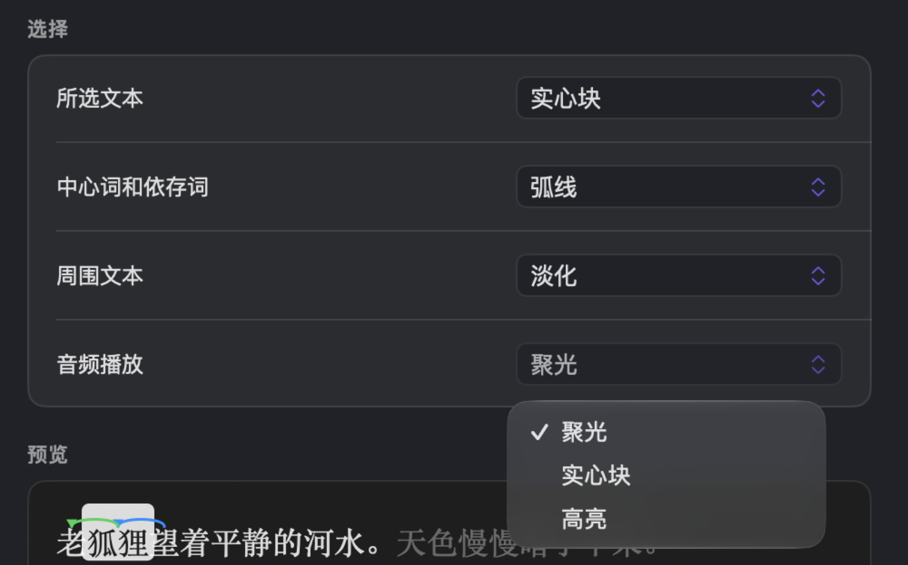
对于视频，画面显示在文本上方。拖动画面下方的分隔条，可以调整视频显示区域的大小。V 形按钮会把播放器折叠到只剩控制按钮。它旁边的视频位置按钮可以让视频在文本上方和文本左侧之间切换。
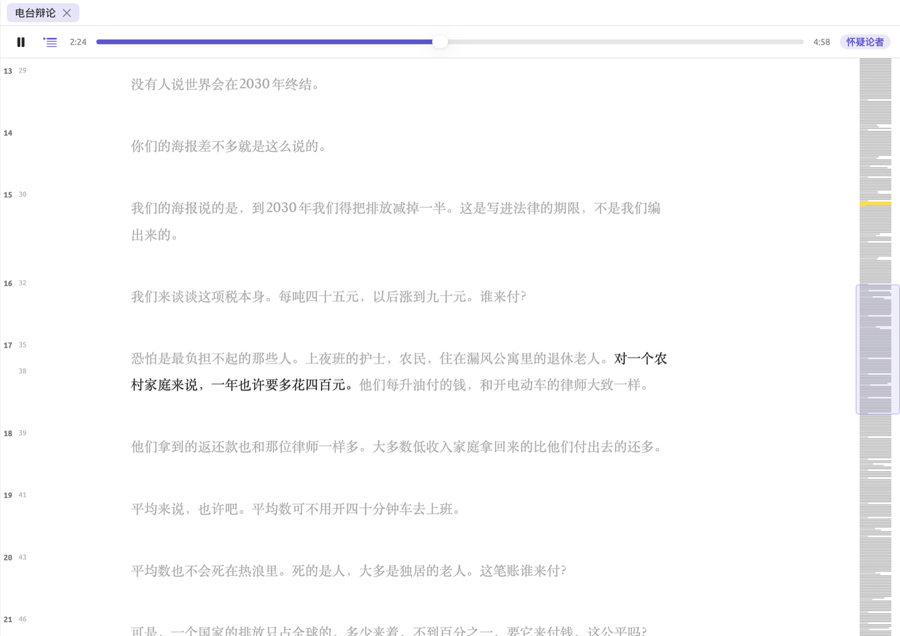
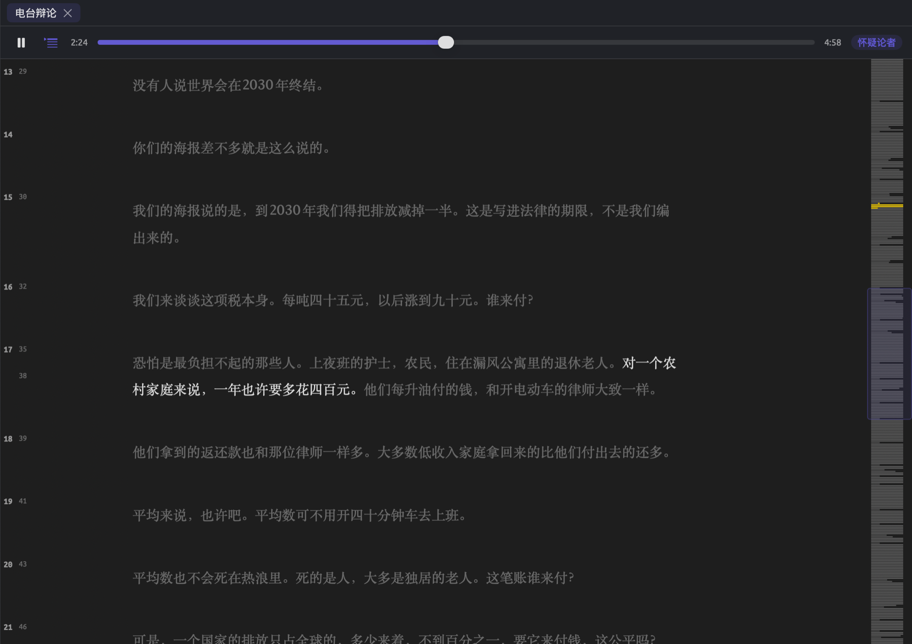
录音的保存位置
所有导入的录音都会复制到资料库中，并从那里播放。关于资料库的更多信息，请参阅第 2 章“开始使用”。导入完成后，你可以随意移动或删除原始文件。把项目导出为 LemmaLoom 归档时，导出的项目会包含其中的全部录音。见第 22 章“交换与导出”。
从电子表格导入属性值
属性记录关于文档的事实信息，例如立场和读者数，发表媒体和发表日期也属于此类。关于属性的类型和选项，请参阅第 8 章“文档集、分组、标签和属性”。如果这些信息已经存放在某个电子表格中，LemmaLoom 可以一次全部导入，并按标题把每一行与一个文档对应起来。
准备文件
把电子表格导出为制表符分隔或逗号分隔（CSV）的文件。无论哪一种，第一行都必须是列名。其中一列应为各文档的标题，与导航栏中显示的完全一致，大小写可以不同。此外，每个属性各占一列。
为“气候辩论”中的文本准备的文件，可以包含下面这样的几行：
标题,立场,读者数,发表日期,媒体
时间不多了,行动派,412000,2024-08-21,北方先驱报
来自气候罢课的信,行动派,186000,2024-09-02,绿线博客
我们为什么封路,行动派,41000,2023-11-14,绿线博客
模型总是失准,怀疑派,96000,2024-03-12,每周纪事
LemmaLoom 会自动判断分隔符。逗号、分号和制表符都可以使用，以第一行中出现次数最多的那一种为准。如果电子表格程序在第一行写入了 sep=;，LemmaLoom 也会遵循这一指示。包含分隔符的值要放在双引号中。文件可以使用 UTF-8、UTF-16 以及旧式的西文 Windows 和 Mac 字符集（Windows-1252、Mac OS Roman）。
日期一律写成 2024-08-21 的形式（年-月-日）。电子表格程序处理时，常常把日期改成本地格式，例如 2024/8/21。存储文件之前，请务必把日期列设为文本格式。数字的小数部分要用小数点（7.5），不要用逗号。数字不要带前导零或千位分隔符：7 和 412000 有效，07 和 412,000 无效。
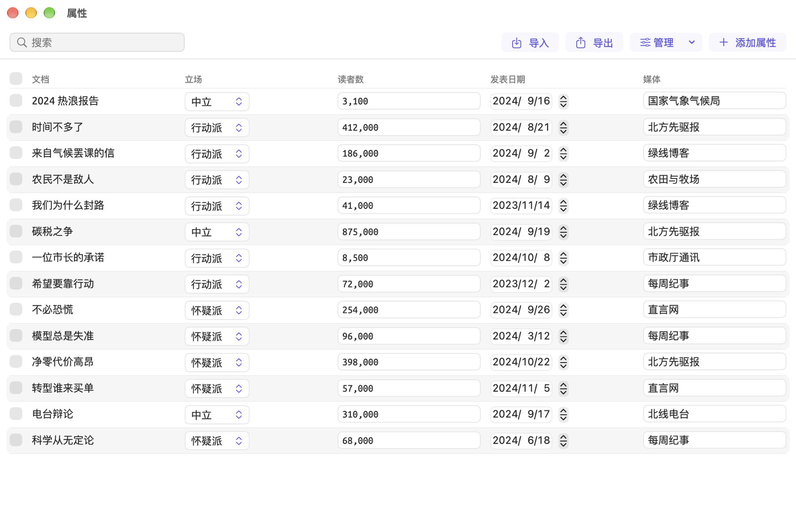
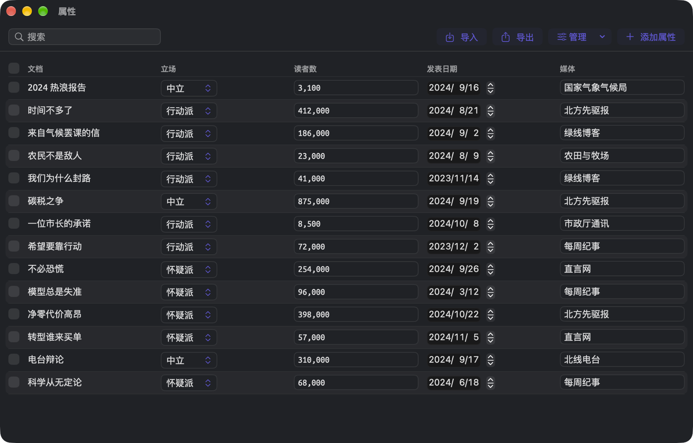
执行导入
- 在导航栏中选中项目，然后选取项目 ▸ 属性；也可以右键点按项目，然后选取属性。
- 在属性窗口中点按导入。
- 选择 CSV 文件，然后点按打开。导入属性对话框随即打开。
- 在文档中，检查存放标题的是哪一列。LemmaLoom 会选择与最多文档相符的那一列。这一列下方会显示有多少行找到了对应的文档（例如已匹配 11 行中的 10 行）。
- 在属性下逐列检查。为每一列选择它要填写的属性，或者选择新建属性或跳过。对于新属性，还要检查类型。
- 点按导入。LemmaLoom 写入这些值，然后关闭对话框。
在撤销历史中，这次导入只算作一步操作。编辑 ▸ 撤销导入属性（⌘Z）会一次性撤回导入过程中创建的所有属性和写入的所有值。
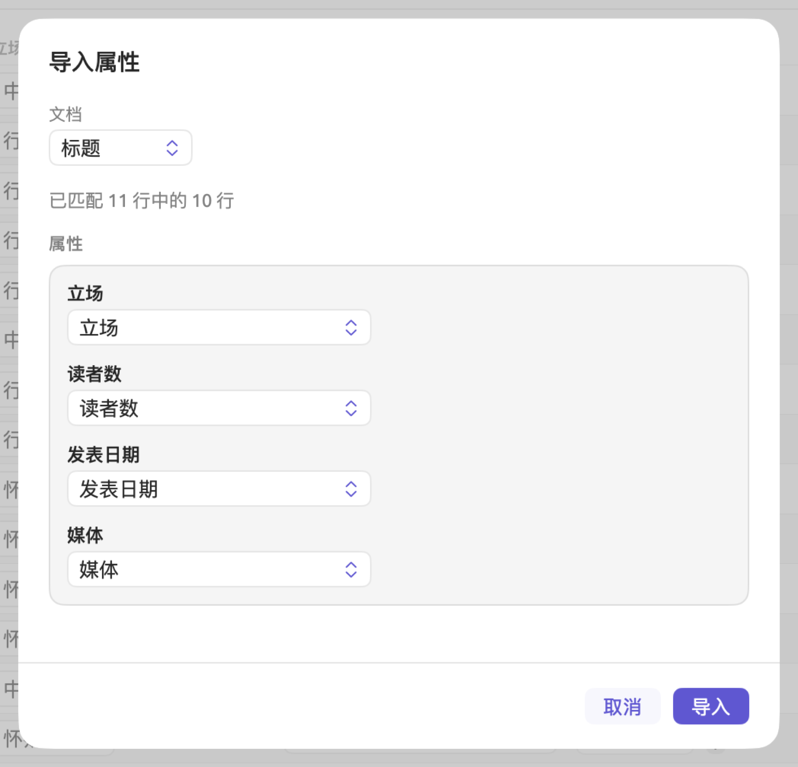
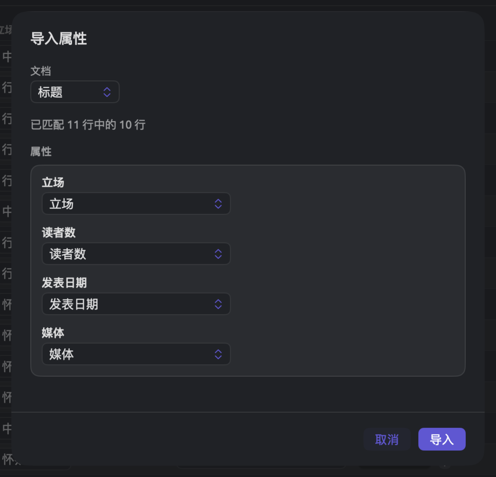
行如何对应到文档
为每一行寻找对应的文档时，LemmaLoom 会把该行文档列中的值与项目中的标题列表逐一比较，忽略大小写以及首尾的空白字符。写入原文文档的值也会沿用到它的译文。
如果项目中没有任何文档使用该行的标题，或者有多个文档共用这个标题，这一行就匹配不到文档。此外，多行不能指向同一个文档，否则这些行都不会被采用。
示例文件在标题行下面有十一行，其中十行正确匹配到文档。但写着“不要恐慌”的那一行没有匹配，因为文档的标题是“不必恐慌”（区别在于第二个字）。对话框因此显示已匹配 11 行中的 10 行。请重命名文档或修改文件，然后重新导入。
列如何成为属性
每一列一开始都有一个默认设置。如果列标题与某个现有属性的名称相同（忽略大小写），这一列就用来填写该属性。没有标题或没有值的列设为跳过；其余所有列都设为新建属性，LemmaLoom 会根据列中的值推测其数据类型。
| 如果所有值都是 | 类型为 |
|---|---|
2024-08-21 这种格式的日期 | 日期 |
true、false、yes 或 no | 布尔值 |
| 整数 | 整数 |
| 数字，且至少有一个带小数点 | 小数 |
| 不超过 12 种不同的值之一，且至少有一种值出现不止一次 | 选择器 |
| 其他任何内容 | 文本 |
推测时会跳过所有空单元格。导入之前，请仔细检查推测出的类型。在一个还没有属性的项目中，示例文件会把“立场”推测为选择器类型，因为它的两个值“行动派”和“怀疑派”都重复出现。“读者数”成为整数类型，“发表日期”成为日期类型。“媒体”也成为选择器：十一行中列出了六家媒体，有些重复出现。如果你预计以后会随意添加新的媒体，就应为“媒体”选择文本；项目“气候辩论”就是这样做的。
每个单元格中的值分别写入对应的文档，空单元格则忽略。空单元格不会改动现有的值；有内容的单元格会覆盖文档当前的值。如果某个值与该属性的类型不符，就不会写入，对话框会在这一列对应的行中显示跳过的数量（例如跳过 1 个）。“读者数”为整数类型时，内容为“约 40 万”的单元格会被跳过。布尔值属性接受 1、0、yes、no、true 和 false 这些值。
对于选择器，不在现有选项中的每个值都会新增为一个选项。如果新值与某个现有选项只有大小写不同，就视为该选项。用来构建智能文档集的属性获得新值时，该文档集会随之更新。例如，“广泛传播”（“读者数”至少为 100,000）就是这样一个智能文档集。
活动窗口
活动窗口显示 LemmaLoom 在后台为你的项目进行的所有工作，包括导入、翻译和建立索引。要查看它，请选取窗口 ▸ 活动（⌥⌘0）。
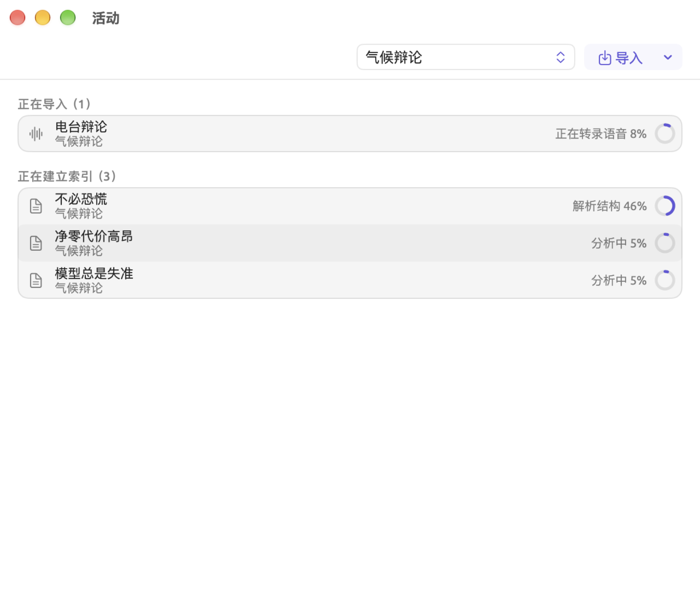
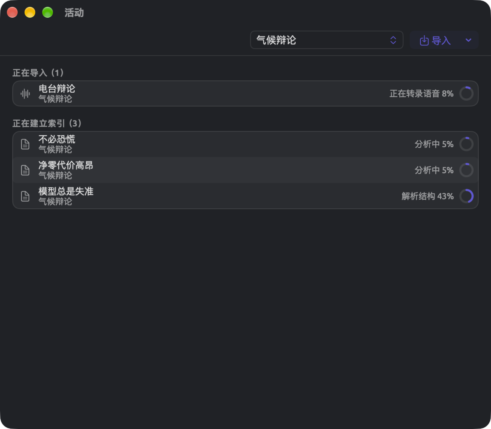
工作按类别分为几个部分，每个部分都在括号中显示其条目数：
| 部分 | 列出的内容 |
|---|---|
| 正在导入 | 正在转录的录音和正在读取的 PDF，以及它们当前的步骤；REFI-QDA 和归档的导入，例如正在导入 LemmaLoom 归档；导入对话框尚未确认的文件和网址，显示为等待中 |
| 正在导出 | 正在进行的 REFI-QDA 或归档导出，例如正在导出 LemmaLoom 归档 |
| 正在翻译 | 正在生成或等待开始的译文 |
| 正在建立索引 | 正在建立索引的文档，附有步骤和百分比，例如解析结构 35%，或者正在运行的分析器，例如正在运行 衔接 |
| 失败 | 建立索引失败的文档和生成失败的译文，附有原因 |
| 等待中 | 排队等待建立索引的文档，显示为等待建立索引 |
每一行显示状态、名称和项目名称。正在进行的工作在行末显示进度环（或旋转指示器）；等待中的工作则在行末显示一个虚线圆圈。如果文档建立索引失败，该位置会改为显示重试索引链接；翻译失败时显示重试链接。
窗口顶部的工具栏有自己的导入菜单，其中分为文档和网页两项。工具栏中还有显示项目名称的菜单，例如“气候辩论”。借助这两个菜单，可以把资料导入所选的任何项目，无论主窗口显示的是哪个项目。导入对话框会在活动窗口中打开。
导入之后
文档一加入项目，LemmaLoom 就开始为它建立索引。如果导入时取消勾选了为语法分析建立索引，就不会建立索引。建立索引时，LemmaLoom 先把文本切分成句子和词，再确定每个词的词典形式和词性。接着对句子进行语法解析，然后运行分析器，最后计算整个文档的统计数据。详情请参阅第 21 章“分析与索引”。
这些处理都在后台进行。建立索引期间，你可以照常工作，不受影响。所需时间取决于你的 Mac 的硬件配置和文档的大小。如果退出 LemmaLoom 中断了建立索引，下次打开应用时会继续进行。
新导入的文档可以立即打开、阅读和编码。不过，依赖索引的功能要等索引建立完成才能使用。透镜菜单的文本样式依赖语法解析的结果，因此在索引建立完成之前，透镜菜单不可用，并显示提示索引完成后即可使用透镜。见第 6 章“透镜”。在索引建立完成之前，检查器的语法标签页显示消息索引完成后即可查看语法信息；同样，文本标签页显示索引完成后即可查看统计数据。涉及词语的查询只考虑已建立索引的文本。点按一个词让录音跳转，也要等索引建立完成。
阅读器的状态栏会显示建立索引的进度，例如解析结构 35%。
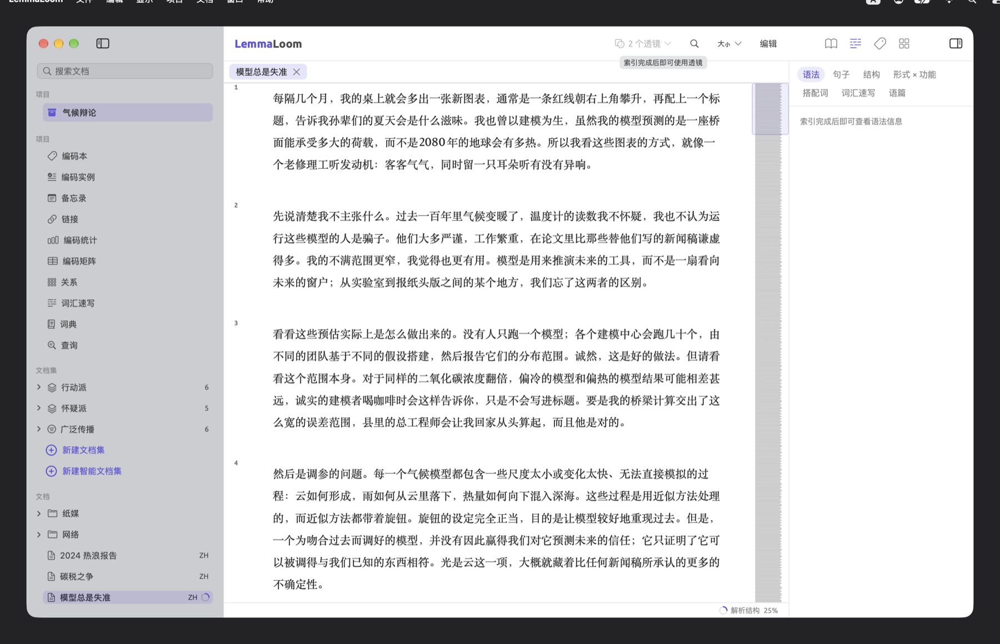
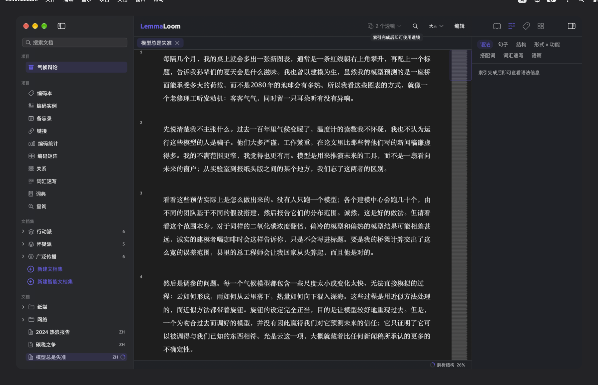
导航栏同样会显示建立索引的进度。每个文档旁边的状态图标显示其建立索引进行到了哪一步，详见第 3 章“项目与文档”中的导航栏。将鼠标指针悬停在状态图标上，会出现说明当前阶段和百分比的提示。如果因故失败，导航栏中该文档的快捷菜单和阅读器的状态栏都会显示原因，并提供重试索引命令。
编辑文档的文本或更改其语言，都会自动触发重新建立索引。更改从索引中排除的设置，同样会触发重新建立索引。